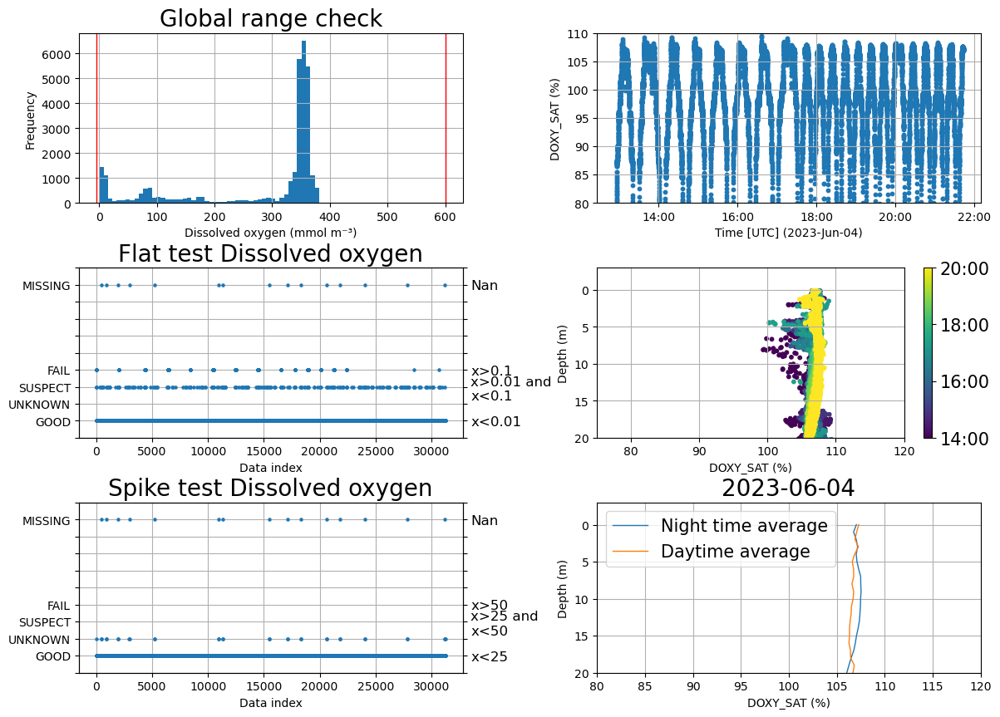

The purpose of this notebook is to demostrate the functionality of glidertests functions. This notebooks can be used to diagnose issues within your glider data. We have added suggested processing in some cases.
Load an example dataset using glidertest.fetchers.load_sample_dataset
Alternatively, use your own with e.g. ds=xr.open_dataset('/path/to/yourfile.nc')
[2]:
ds=fetchers.load_sample_dataset()
Downloading file 'sea045_20230530T0832_delayed.nc' from 'https://callumrollo.com/files/sea045_20230530T0832_delayed.nc' to '/home/runner/.cache/glidertest'.
Several other example datasets are available, though they do not have all of the variables required to run the functions in this notebook. Uncomment lines in the following cell to use them
[3]:
#ds = fetchers.load_sample_dataset(dataset_name="sea055_20220104T1536_delayed.nc") # Full SeaExplorer mission in the Baltic#ds = fetchers.load_sample_dataset(dataset_name="sg015_20050213T230253_delayed.nc") # Seaglider data#ds = fetchers.load_sample_dataset(dataset_name="sg014_20040924T182454_delayed.nc") # Full Seaglider mission in the Labrador Sea#ds = fetchers.load_sample_dataset(dataset_name="sg014_20040924T182454_delayed_subset.nc") #Subset of a full Seaglider mission in the Labrador Sea
Particulate backscatter bbp calculated following methods in the Ocean Observatories Initiative document DATA PRODUCT SPECIFICATION FOR OPTICAL BACKSCATTER (RED WAVELENGTHS) Version 1-05 Document Control Number 1341-00540 2014-05-28. Downloaded from https://oceanobservatories.org/wp-content/uploads/2015/10/1341-00540_Data_Product_SPEC_FLUBSCT_OOI.pdf
Electrical conductivity of the water body by CTD Quality Flag
standard_name :
status_flag
comment :
Quality control flags from IOOS QC QARTOD https://github.com/ioos/ioos_qc Version: 2.1.0. Using config: [<Call stream_id=conductivity function=qartod.gross_range_test(suspect_span=[5, 42], fail_span=[2, 45])>, <Call stream_id=conductivity function=qartod.location_test(bbox=[10, 50, 25, 70])>]. Threshold values from EuroGOOS DATA-MEQ Working Group (2010) Recommendations for in-situ data Near Real Time Quality Control [Version 1.2]. EuroGOOS, 23pp. DOI http://dx.doi.org/10.25607/OBP-214.
[31232 values with dtype=int8]
DPAR
(N_MEASUREMENTS)
float32
...
long_name :
Downwelling vector irradiance as energy of electromagnetic radiation (PAR wavelengths) in the water body by cosine-collector radiometer.
oxygen concentration corrected for salinity using gsw.O2sol_SP_pt withsalinity and potential temperature from dataset. Original oxygen concentration assumed to have been calculated using salinity = 0.0 PSU
sensor :
SENSOR_DISSOLVED_GAS_SENSORS_0058
[31232 values with dtype=float32]
DOXY_QC
(N_MEASUREMENTS)
int8
...
ioos_qc_module :
qartod
quality_control_conventions :
IOOS QARTOD standard flags
quality_control_set :
1
valid_min :
1
valid_max :
9
flag_values :
[1 2 3 4 9]
flag_meanings :
GOOD UNKNOWN SUSPECT FAIL MISSING
long_name :
oxygen concentration Quality Flag
standard_name :
status_flag
comment :
Pilot QC: Following issues with the oxygen sensor, a 2-point calibration has been performed on date {2023-05-25}. The values at 0 and 100 % saturation are accurate. Absolute Values between these two extremes may be inaccurate. The relative variability is confirmed to be valid and no temporal drift occurs. During tests values that can be outside the manufacturer acceptance range have been observed when compared to the output from a reference sensor. This issue is particularly evident around 100μmol/l. More information on the history and updates regarding this issue (https://observations.voiceoftheocean.org/data/updates). . Minimum QC value set to 4. IOOS_QC: Quality control flags from IOOS QC QARTOD https://github.com/ioos/ioos_qc Version: 2.1.0. Using config: [<Call stream_id=oxygen_concentration function=qartod.gross_range_test(suspect_span=[0, 350], fail_span=[0, 500])>, <Call stream_id=oxygen_concentration function=qartod.spike_test(suspect_threshold=10, fail_threshold=50)>, <Call stream_id=oxygen_concentration function=qartod.location_test(bbox=[10, 50, 25, 70])>].
[31232 values with dtype=int8]
phycocyanin
(N_MEASUREMENTS)
float32
...
instrument :
instrument_flourometer
long_name :
phycocyanin
observation_type :
calculated
sensitivity :
0.09
source :
FLBBPC_PC_SCALED
standard_name :
concentration_of_phycocyanin_in_sea_water
units :
mg m-3
valid_max :
175.0
valid_min :
0.0
comment :
accuracy :
precision :
platform :
platform
resolution :
ancillary_variables :
[31232 values with dtype=float32]
PRES
(N_MEASUREMENTS)
float32
...
comment :
ctd pressure sensor
sensor :
SENSOR_CTD_205048
long_name :
Pressure (spatial coordinate) exerted by the water body by profiling pressure sensor and correction to read zero at sea level
Quality control flags from IOOS QC QARTOD https://github.com/ioos/ioos_qc Version: 2.1.0. Using config: [<Call stream_id=conductivity function=qartod.gross_range_test(suspect_span=[5, 42], fail_span=[2, 45])>, <Call stream_id=salinity function=qartod.gross_range_test(suspect_span=[5, 38], fail_span=[2, 41])>, <Call stream_id=salinity function=qartod.spike_test(suspect_threshold=0.3, fail_threshold=0.9)>, <Call stream_id=salinity function=qartod.location_test(bbox=[10, 50, 25, 70])>]. Threshold values from EuroGOOS DATA-MEQ Working Group (2010) Recommendations for in-situ data Near Real Time Quality Control [Version 1.2]. EuroGOOS, 23pp. DOI http://dx.doi.org/10.25607/OBP-214.
Corrected following Thermal lag from Thermal Inertia of Conductivity Cells: Observations with a Sea-Bird Cell Rolf G. Lueck and James J. Picklo https://doi.org/10.1175/1520-0426(1990)007<0756:TIOCCO>2.0.CO;2 as implemented by Dever M., Owens B., Richards C., Wijffels S., Wong A., Shkvorets I., Halverson M., and Jonhson G. (accepted). Static and dynamic performance of the RBRargo3 CTD. Journal of Atmospheric and Oceanic Technology.
precision :
platform :
platform
ancillary_variables :
TEMP_QC
sensor :
SENSOR_CTD_205048
[31232 values with dtype=float32]
TEMP_QC
(N_MEASUREMENTS)
int8
...
ioos_qc_module :
qartod
quality_control_conventions :
IOOS QARTOD standard flags
quality_control_set :
1
valid_min :
1
valid_max :
9
flag_values :
[1 2 3 4 9]
flag_meanings :
GOOD UNKNOWN SUSPECT FAIL MISSING
long_name :
Temperature of the water body by CTD Quality Flag
standard_name :
status_flag
comment :
Quality control flags from IOOS QC QARTOD https://github.com/ioos/ioos_qc Version: 2.1.0. Using config: [<Call stream_id=temperature function=qartod.gross_range_test(suspect_span=[0, 30], fail_span=[-2.5, 40])>, <Call stream_id=temperature function=qartod.spike_test(suspect_threshold=2.0, fail_threshold=6.0)>, <Call stream_id=temperature function=qartod.location_test(bbox=[10, 50, 25, 70])>]. Threshold values from EuroGOOS DATA-MEQ Working Group (2010) Recommendations for in-situ data Near Real Time Quality Control [Version 1.2]. EuroGOOS, 23pp. DOI http://dx.doi.org/10.25607/OBP-214.
Potential temperature of the water body by computation using UNESCO 1983 algorithm. Quality Flag
standard_name :
status_flag
comment :
Quality control flags from IOOS QC QARTOD https://github.com/ioos/ioos_qc Version: 2.1.0. Using config: [<Call stream_id=temperature function=qartod.gross_range_test(suspect_span=[0, 30], fail_span=[-2.5, 40])>, <Call stream_id=temperature function=qartod.spike_test(suspect_threshold=2.0, fail_threshold=6.0)>, <Call stream_id=temperature function=qartod.location_test(bbox=[10, 50, 25, 70])>, <Call stream_id=conductivity function=qartod.gross_range_test(suspect_span=[5, 42], fail_span=[2, 45])>, <Call stream_id=salinity function=qartod.gross_range_test(suspect_span=[5, 38], fail_span=[2, 41])>, <Call stream_id=salinity function=qartod.spike_test(suspect_threshold=0.3, fail_threshold=0.9)>, <Call stream_id=salinity function=qartod.location_test(bbox=[10, 50, 25, 70])>]. Threshold values from EuroGOOS DATA-MEQ Working Group (2010) Recommendations for in-situ data Near Real Time Quality Control [Version 1.2]. EuroGOOS, 23pp. DOI http://dx.doi.org/10.25607/OBP-214.
[31232 values with dtype=int8]
vertical_distance_to_seafloor
(N_MEASUREMENTS)
float32
...
long_name :
vertical distance from glider to seafloor
source :
Altitude
standard_name :
vertical_distance_to_seafloor
units :
m
comment :
Distance to the seafloor is calculated from the glider altimeter (see altimeter variable), which is oriented at 20 degrees from the vertical such that it is vertical when the glider is pitched downwards at 20 degrees.
accuracy :
precision :
platform :
platform
resolution :
ancillary_variables :
[31232 values with dtype=float32]
adcp_time
(N_MEASUREMENTS)
datetime64[ns]
...
long_name :
AD2CP recorded time
source :
AD2CP_TIME
standard_name :
ad2cp_recorded_time
comment :
accuracy :
precision :
platform :
platform
resolution :
ancillary_variables :
[31232 values with dtype=datetime64[ns]]
adcp_SpeedOfSound
(N_MEASUREMENTS)
float32
...
units :
m/s
description :
[31232 values with dtype=float32]
adcp_MagnetometerX
(N_MEASUREMENTS)
float32
...
units :
description :
Magnetometer reading in last measurement interval
[31232 values with dtype=float32]
adcp_MagnetometerY
(N_MEASUREMENTS)
float32
...
units :
description :
Magnetometer reading in last measurement interval
[31232 values with dtype=float32]
adcp_MagnetometerZ
(N_MEASUREMENTS)
float32
...
units :
description :
Magnetometer reading in last measurement interval
[31232 values with dtype=float32]
adcp_AccelerometerX
(N_MEASUREMENTS)
float32
...
units :
g
description :
Accelerometer reading in last measurement interval
[31232 values with dtype=float32]
adcp_AccelerometerY
(N_MEASUREMENTS)
float32
...
units :
g
description :
Accelerometer reading in last measurement interval
[31232 values with dtype=float32]
adcp_AccelerometerZ
(N_MEASUREMENTS)
float32
...
units :
g
description :
Accelerometer reading in last measurement interval
[31232 values with dtype=float32]
adcp_Ambiguity
(N_MEASUREMENTS)
float32
...
units :
m/s
description :
Ambiguity velocity corrected for sound velocity
[31232 values with dtype=float32]
adcp_TransmitEnergy
(N_MEASUREMENTS)
float32
...
units :
description :
Transmit Energy
[31232 values with dtype=float32]
adcp_MagnetometerTemperature
(N_MEASUREMENTS)
float32
...
units :
---
description :
Uncalibrated temperature reading from the magnetometer
This study used data collected and made freely available by Voice of the Ocean Foundation (https://voiceoftheocean.org) accessed from https://erddap.observations.voiceoftheocean.org/erddap/index.html
basin :
Bornholm Basin
cdm_data_type :
Trajectory
comment :
Altitude set to 2m for the entire mission duration. Zt/zs set to 2m for the entire mission duration
contributor_name :
Callum Rollo, Louise Biddle, Olle Petersson, Aleksandra Mazur, Marcus Melin, Gunnar Johnsson, Andrew Birkett, Chiara Monforte
contributor_role :
Data scientist, PI, Operator, Operator, Operator, Operator, Operator, Operator,
creator_email :
callum.rollo@voiceoftheocean.org
creator_name :
Callum Rollo
creator_url :
https://observations.voiceoftheocean.org
dataset_id :
delayed_SEA045_M79
date_created :
2024-07-18T17:50:31Z
date_issued :
2024-07-18T17:50:31Z
date_modified :
2024-07-18T17:50:31Z
deployment_id :
79
deployment_name :
SAMBA
featureType :
trajectory
format_version :
IOOS_Glider_NetCDF_v2.0.nc
geospatial_lat_max :
55.572696685791016
geospatial_lat_min :
55.255916595458984
geospatial_lat_units :
degrees_north
geospatial_lon_max :
16.364299774169922
geospatial_lon_min :
15.989300727844238
geospatial_lon_units :
degrees_east
glider_instrument_name :
seaexplorer
glider_model :
SeaExplorer
glider_name :
Kvanne
glider_serial :
45
history :
CPROOF glider toolbox version: pre-tag
id :
sea045_20230530T0832_delayed
institution :
Voice of the Ocean Foundation
keywords :
AUVS, Autonomous Underwater Vehicles, Oceans, Ocean Pressure, Water Pressure, Ocean Temperature, Water Temperature, Salinity/Density, Conductivity, Density, Salinity
keywords_vocabulary :
GCMD Science Keywords
license :
Creative Commons Attribution 4.0 (https://creativecommons.org/licenses/by/4.0/) This study used data collected and made freely available by Voice of the Ocean Foundation (https://voiceoftheocean.org) accessed from https://erddap.observations.voiceoftheocean.org/erddap/index.html
# Load glider dataset with vertical velocity parametersds_sg014=fetchers.load_sample_dataset(dataset_name="sg014_20040924T182454_delayed_subset.nc")# Subset of a full Seaglider mission in the Labrador Sea# Calculate vertical seawater velocity# First, calculate the vertical speed of the glider from the depth datads_sg014=tools.calc_w_meas(ds_sg014)# Next, calculate the vertical seawater speed by differencing the DZDT data and the modelled vertical glider speedds_sg014=tools.calc_w_sw(ds_sg014)# Plot about 20 profiles to see the behaviour of the flight modelstart_prof=400end_prof=420plots.plot_vertical_speeds_with_histograms(ds_sg014,start_prof,end_prof);
Downloading file 'sg014_20040924T182454_delayed_subset.nc' from 'https://callumrollo.com/files/sg014_20040924T182454_delayed_subset.nc' to '/home/runner/.cache/glidertest'.
[6]:
# One way to characterise the flight model performance is to look at the average# vertical seawater velocity for climbs and for dives. This uses a bin average of the original# data on time intervals, and PHASE to separate dives from climbs# Dive climb bias in the vertical speed# Separate dives and climbs using the PHASE variable, PHASE=2 is a dive, PHASE=1 is a climbds_dives=ds_sg014.sel(N_MEASUREMENTS=ds_sg014.PHASE==2)ds_climbs=ds_sg014.sel(N_MEASUREMENTS=ds_sg014.PHASE==1)# Calculate bin averagesds_out_dives=tools.quant_binavg(ds_dives,var='VERT_CURR_MODEL',dz=10)ds_out_climbs=tools.quant_binavg(ds_climbs,var='VERT_CURR_MODEL',dz=10)# Plot the profiles (compare to Fig 3 and Fig 4 in Frajka-Williams et al. 2011)plots.plot_combined_velocity_profiles(ds_out_dives,ds_out_climbs)
# Basic plot of the location of the dataset in space/timeplots.plot_glider_track(ds)
/home/runner/work/glidertest/glidertest/glidertest/plots.py:471: UserWarning: set_ticklabels() should only be used with a fixed number of ticks, i.e. after set_ticks() or using a FixedLocator.
cbar.ax.set_yticklabels([pd.to_datetime(t).strftime('%Y-%b-%d') for t in cbar.get_ticks()])
/home/runner/micromamba/envs/TEST/lib/python3.12/site-packages/cartopy/io/__init__.py:241: DownloadWarning: Downloading: https://naturalearth.s3.amazonaws.com/10m_physical/ne_10m_land.zip
warnings.warn(f'Downloading: {url}', DownloadWarning)
/home/runner/micromamba/envs/TEST/lib/python3.12/site-packages/cartopy/io/__init__.py:241: DownloadWarning: Downloading: https://naturalearth.s3.amazonaws.com/10m_physical/ne_10m_ocean.zip
warnings.warn(f'Downloading: {url}', DownloadWarning)
/home/runner/micromamba/envs/TEST/lib/python3.12/site-packages/cartopy/io/__init__.py:241: DownloadWarning: Downloading: https://naturalearth.s3.amazonaws.com/10m_physical/ne_10m_coastline.zip
warnings.warn(f'Downloading: {url}', DownloadWarning)
We want to check if the profile number is consistently increasing or not. When using pyglider to assign the profile, there can be some issues if the correct pressure and time threshold is not chosen.
Users, based on their dataset will chose a specific min_dp and profile_min_time for the get_profiles_new(). If not chosen carefully, the function may struggle assigning a profile number (resulting in 0s in the middle of the dataset) or could split profiles when, for example, the glider get stuck on pycnoclne
Check bottom data and see if we have stable data that can be used for calibration. We also check stability of data to assess whether or not we have suspicious drift over the mission
We check for any temporal drift when analysing the entire water column and not just the bottom data
We then check if data is affected by non photochemical quenching (NPQ). NPQ is a physiological response to high light environments used by plants and algae to protect themselves from damage and causes an evident weakening in fluorescence signal during the day. With the ‘day_night_avg’ function, we compute day and night averages of chlorophyll. We then plot a selected section of chlorophyll data with ‘plot_section_with_srss’ to see if any NPQ effect in the top few meters is visible and then we
plot a selcted day daily and night average to check again any NPQ effect with ‘plot_daynight_avg’.
(Reminder this tests mission had issues with FLBBCD as it stopped working few days into the missiona and got flooded)
[13]:
plots.process_optics_assess(ds,var='CHLA');
1.2% of scaled CHLA data is negative, consider recalibrating data
Negative data in present from 2023-06-04T12:53 to 2023-06-04T21:33
Negative data is present between 0.2 and 79.7
CHLA data is missing for part of the mission
Data from the deepest 10% of data has been analysed and data does not seem perfectly stable. An alternative solution for dark counts has to be considered.
Moreover, it is recommended to check the sensor has this may suggest issues with the sensor (i.e water inside the sensor, temporal drift etc)
Data changed (increased or decreased) by 578.1% from the beginning to the end of the mission
# Let's visually check a section of chlorphyll and see if we observe any NPQfig,ax=plt.subplots(1,1,figsize=(15,5))plots.plot_quench_assess(ds,'CHLA',ax,ylim=35);
# Compute day and night average for chlorophylla and temeparturedayT,nightT=tools.compute_daynight_avg(ds,sel_var='TEMP')dayS,nightS=tools.compute_daynight_avg(ds,sel_var='PSAL')dayC,nightC=tools.compute_daynight_avg(ds,sel_var='CHLA')
Do we see any difference in chl between day and night? Can this just simply be explained by changes in water mass properties (different temp and salinity)?
NPQ occurs only during the daytime, therefore when night measurements close in time and space are available, they can be used to correct daytime profiles. Different methods exist for NPQ correction. We recommend the paper by Thomalla et al. (2018) for a good overview on all possible methods. GliderTools (https://glidertools.readthedocs.io/en/latest/optics.html#quenching-correction) provides good tools for correction
Thomalla, S. J., W. Moutier, T. J. Ryan-Keogh, L. Gregor, and J. Schütt. 2018. An optimized method for correcting fluorescence quenching using optical backscattering on autonomous platforms. Limnology and Oceanography: Methods, 16: 132-144. DOI: https://doi.org/10.1002/lom3.10234
Likely we do as the diving angle changes. The pitch for upcast and downcast are very different while the position of the sensor remains the same. This means that the angle at which the sensor is exposed to light is very different and data will not be comparable. Furthermore, navigation patterns have to be considered too when processing PAR data. As the glider sits at surface, the pitch (therefore the sensor angle) can be very different from the rest of the dive. Moreover, as the glider starts to
dive or prepares for surfacing during a climb the pitch may be very different as well.
Discarding and reconstructing algebraically the surface PAR using an exponential equation and selecting data from only up or downcast is therefore recommended. GliderTools provides great examples and functions to address this issues (https://glidertools.readthedocs.io/en/latest/optics.html#par-replacement)
Check bottom data and see if we have stable data that can be used for calibration. We also check stability of data to assess whether or not we have suspicious drift over the mission
We check for any temporal drift when analysing the entire water column and not just the bottom data
In case computation of particle backscattering from the scaled optical data was not done, this can be done following a function from GliderTools. this functions uses uses the coefficients from Zhang et al. (2009) to convert the raw counts into total backscatter (m-1), correcting for temperature and salinity. The \(\chi\) factor and \(\theta\) in this example were taken from Sullivan et al. (2013) and Slade & Boss (2015).
Slade, W., Boss, E. 2015. Spectral attenuation and backscattering as indicators of average particle size. Applied Optics 54: 7264-7277, doi:10.1364/AO.54.00726.
Sullivan, J., Twardowski, M., Zaneveld, J.R.V., Moore, C. 2013. Measuring optical backscattering in water. Light Scattering Reviews 7. 189-224. 10.1007/978-3-642-21907-8_6.
Zhang, X., and L. Hu. 2009. Estimating scattering of pure water from density fluctuation of the refractive index. Optics Express, 17: 1671-1678. DOI: 10.1364/OE.17.001671 7
[19]:
plots.process_optics_assess(ds,var='BBP700');
0.7% of scaled BBP700 data is negative, consider recalibrating data
Negative data in present from 2023-06-04T12:58 to 2023-06-04T21:39
Negative data is present between 37.5 and 58.8
BBP700 data is missing for part of the mission

Data from the deepest 10% of data has been analysed and data does not seem perfectly stable. An alternative solution for dark counts has to be considered.
Moreover, it is recommended to check the sensor has this may suggest issues with the sensor (i.e water inside the sensor, temporal drift etc)
Data changed (increased or decreased) by 42.8% from the beginning to the end of the mission
Check for any possible drift in the data that might look suspicious. The great temporal and spatial variability may not allow for such check to be succesful. Evaluation using reference CTD cast data or any other data available in the stufy area is recommended.
iflen(err.where(err>2).dropna())<2:print('No data has an percentage error above 2% when the difference between up and downcast is computed')else:print(f'{int((100*len(err.where(err>2).dropna()))/len(err))}% of the data has a percentage error above 2 %. \nThe error reaches {int(np.nanmax(err))}% at {int(df.depth[np.where(err==np.nanmax(err))[0][0]])}m. \nThis may idicate data shows hysteresis. \nThe RMS between climb and dive data is {np.round(rms,1)}')
26% of the data has a percentage error above 2 %.
The error reaches 200% at 79m.
This may idicate data shows hysteresis.
The RMS between climb and dive data is 9.2